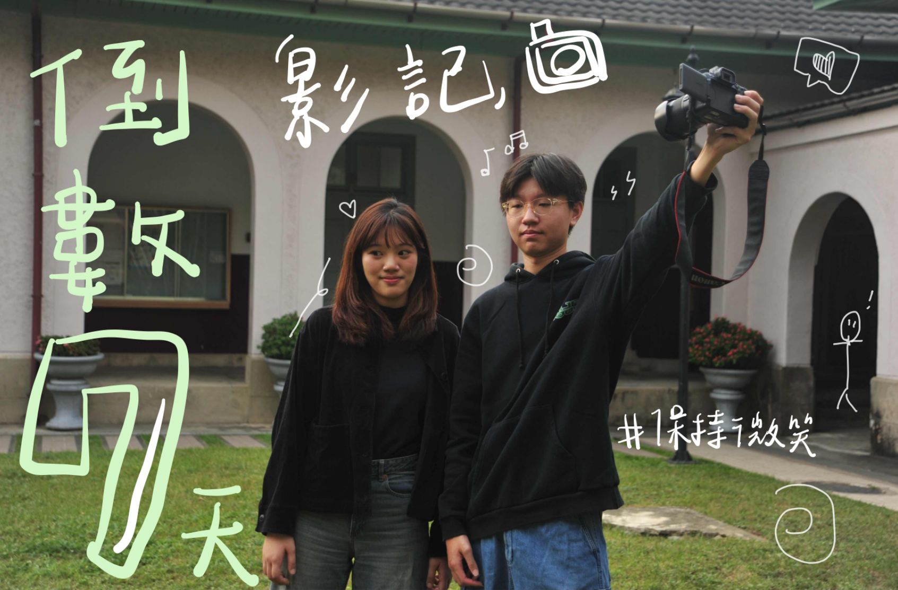
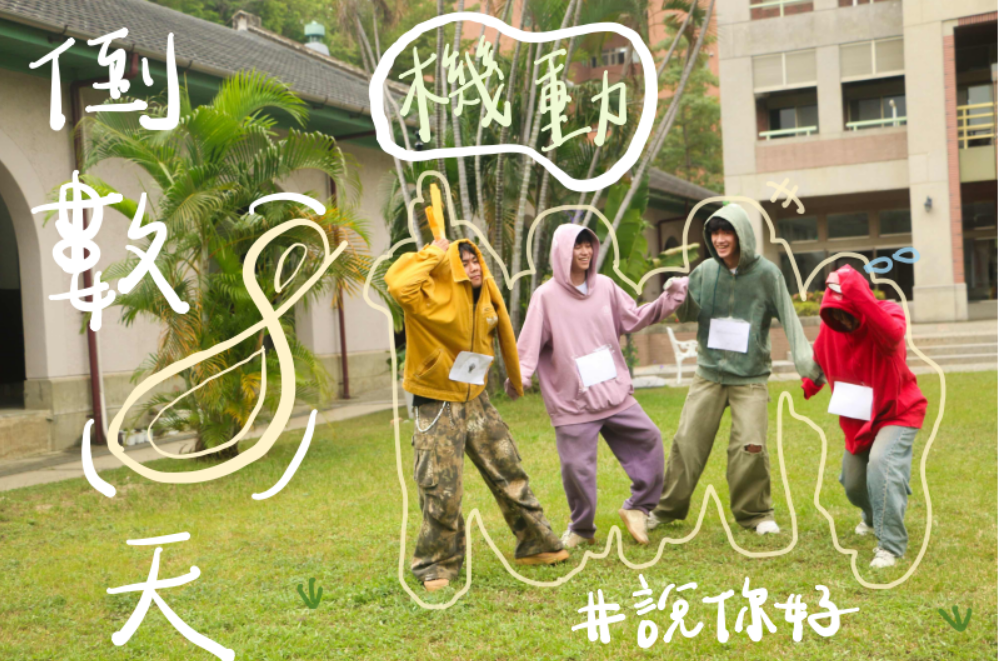
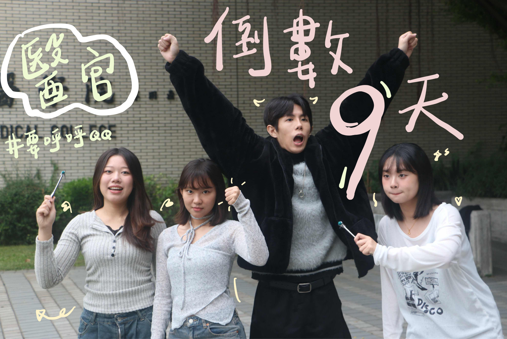

幹部介紹
文案會依時間陸續公開，請持續關注。
影記
飽餐後，小工隱隱覺得有人在偷看自己。
「吃個飯也要被看來看去，這些臭狗仔」
被偷看的感覺越來越強烈，小工再也受不了了，他猛的轉身！
「喀擦！」
清脆的快門聲響起。
這些人太過分了，偷看就算了竟然還偷拍！小工剛想大聲呵斥，但這時，從傳來快門聲的暗處走出了兩個人。
「你們…你們是誰？」
小工非常疑惑，不知道這兩個素未謀面的人為什麼要偷拍自己，陌生人不語，只是一邊笑著一邊把剛才的照片給小工看。
「這…這太美了…」
小工被眼前所見震驚到連話都快說不清楚了，這張照片就好像文藝復興時期的畫作，像冬天的一杯熱可可，一切都是這麼的完美。
原來，他們是工科營的影記，擁有很強的畫面捕捉能力跟對美的執著，
營期看到他們請記得擺出你們最燦爛的笑容，美好的畫面跟回憶永遠留存下去！

機動
經過治療後，小工、小珂和小瑩身上的傷勢竟然完全康復了！但在這時突然傳來一陣低沉性感的聲音。
「咕嚕咕嚕咕嚕…」
原來是小工、小珂和小瑩的肚子餓了，看著眾人飢餓難耐，華佗決定要帶著大家去他最喜歡吃的日式料理店吃點好的。
到店裡後，小工、小珂和小瑩看著菜單上琳瑯滿目的餐點，遲遲無法選擇出想吃什麼，忽然之間，三人眼睛一亮，小工甚至激動到叫出聲來。
「就是這個！我要吃雞丼！」
沒錯！以雞肉、雞蛋、洋蔥等覆蓋在飯上，再以碗盛裝而成的雞丼！！
機動組是工科營裡負責許多繁重工作的精銳，是營期不可或缺的角色。

醫官
當小工、小珂和小瑩沉浸在時光穿越的欣喜與驚訝時，不小心從萬里長城的階梯上掉了下去，
他們不斷翻滾跌落加旋轉，就在他們絕望之際，終於撞上了障礙物。
頓時煙霧瀰漫，在一片模糊之中，小工、小珂和小瑩互相檢查傷勢，突然，傳來性感的低音聲喃喃道。
「見諸君似需相助，吾等願為諸君療之。」
煙霧散去，出現的竟是華佗、張小娘子、義姁以及談允賢，
平時只在書上看見的古代名醫，此時此刻出現在小工、小珂和小瑩面前。
他們是這裡常駐的醫官，陪伴所有想成為出色工程師而努力的人們。
身體有任何不適都可以來找醫官們喔!
